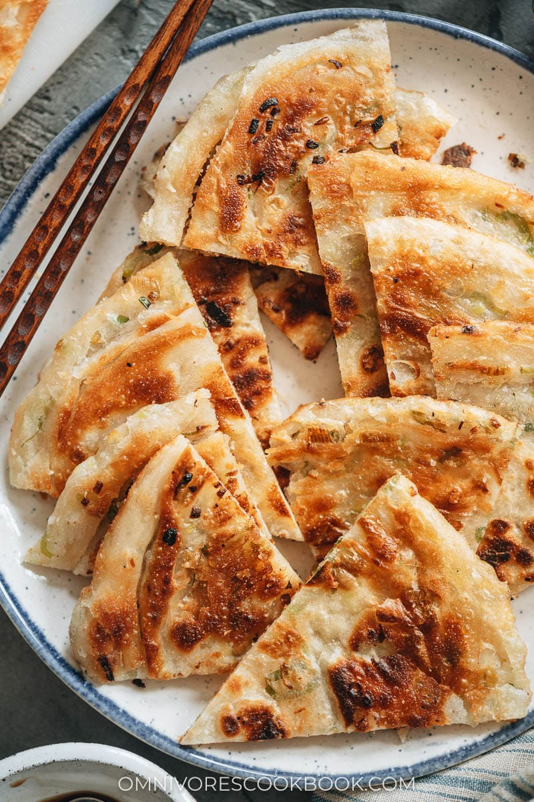

Scallion Pancake

Super crispy and flaky on the outside and slightly chewy inside, my dim sum favorite, scallion pancakes, make a wonderful snack that you’ll love!
Chinese scallion pancakes are always such a hit at dim sum. You’ve likely seen them as an appetizer or side dish to go with all those stir-fry dishes that you love. But did you know you can make an even tastier version at home?
The secret to scallion pancakes is the crispy, flaky exterior that gives way to a slightly chewy interior of thin layers. When fresh-off-the-stove, it is extra crunchy and addictively fragrant. They are such a treat that you can enjoy them on their own, and they’re perfect for snacking. And your kids will adore them!
Ingredients
Dough
- 2 cups (300 g) all-purpose flour
- 1/2 teaspoon salt
- 1/2 cup boiling water
- 1/4 cup cool water
Filling
- 1/4 cup + 2 tablespoons (50 g) all-purpose flour
- 1/4 cup peanut oil (or your favorite oil like olive oil, melted coconut oil, melted butter, or melted chicken fat etc.)
- 3/4 teaspoon salt
- 8 to 10 green onions , split down the middle and chopped (yield 1 cup)
Steps
- Combine the flour and salt in a big bowl. Stir to mix well. Slowly drizzle in the hot water while mixing it with a pair of chopsticks (or a fork), until the water is fully absorbed. Slowly drizzle in the cool water, continuing to stir until many dough flakes form. Press the dough together, and try to combine the wet dough with the dry flour. Drizzle in a little extra water if there is any dry flour remaining. Knead until a firm ball is formed, about 5 minutes. Cover and let rest for 20 minutes.
- While the dough is resting, combine the flour, oil, and salt in a small bowl. Mix until a smooth paste is formed.
- If making the dipping sauce, combine all the ingredients with 1 tablespoon of water in a small bowl and mix until the sugar is dissolved.